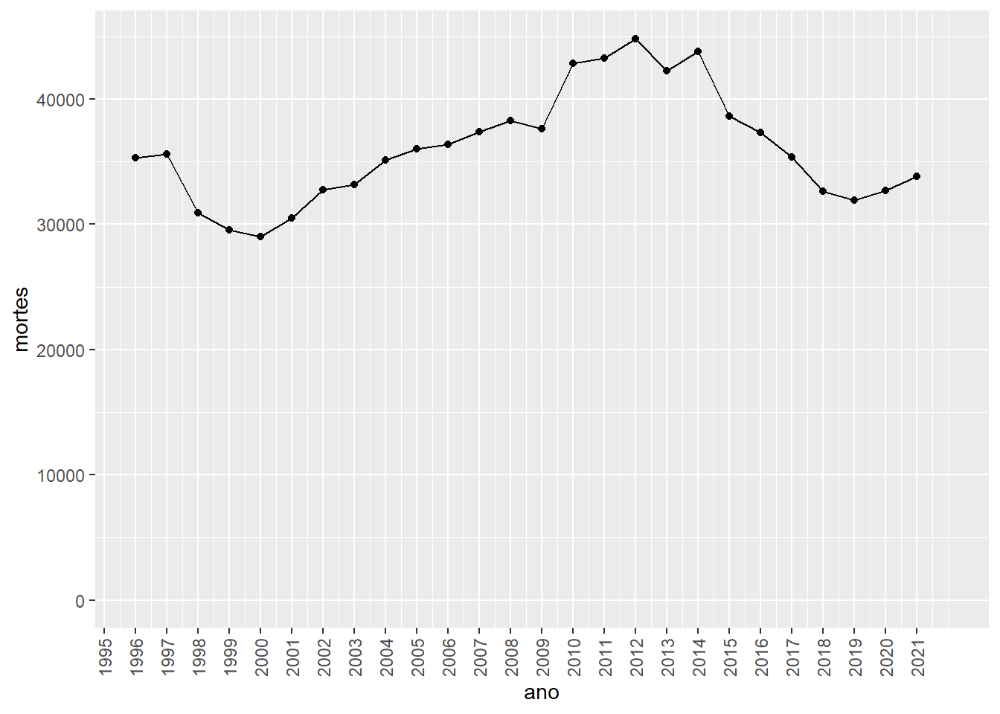
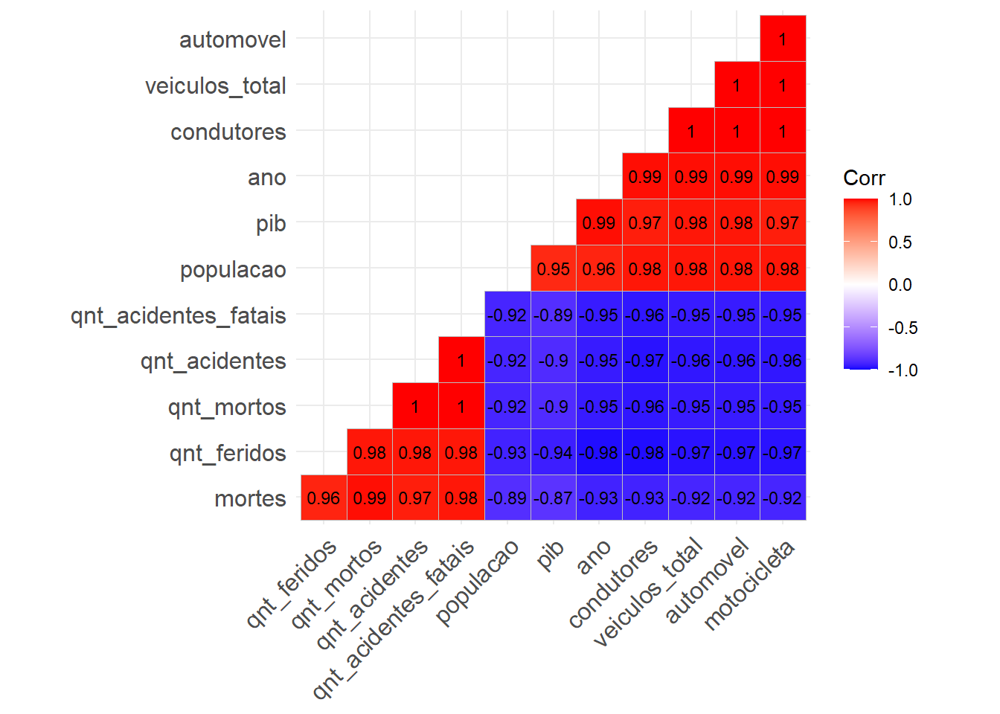
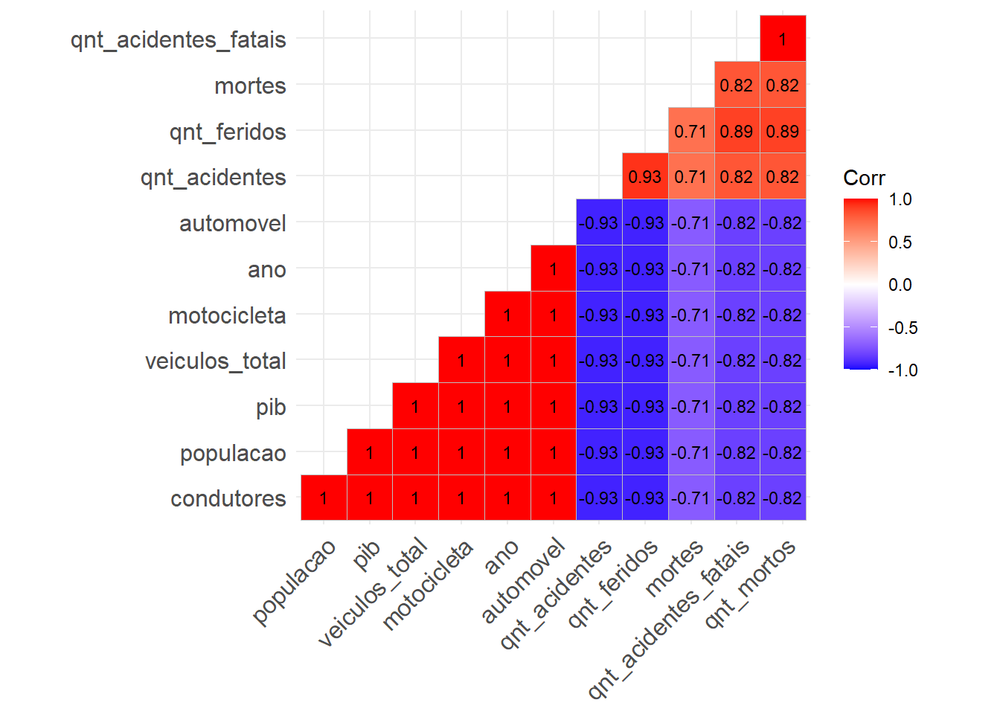
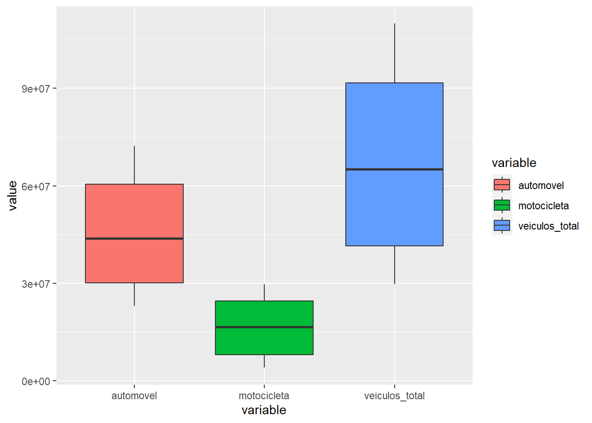
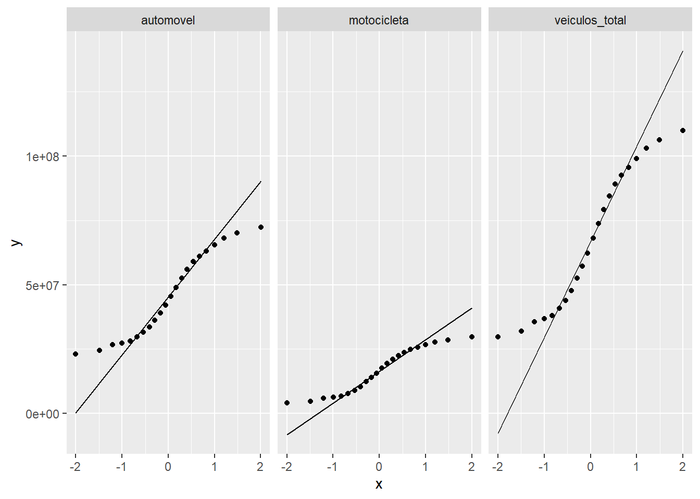
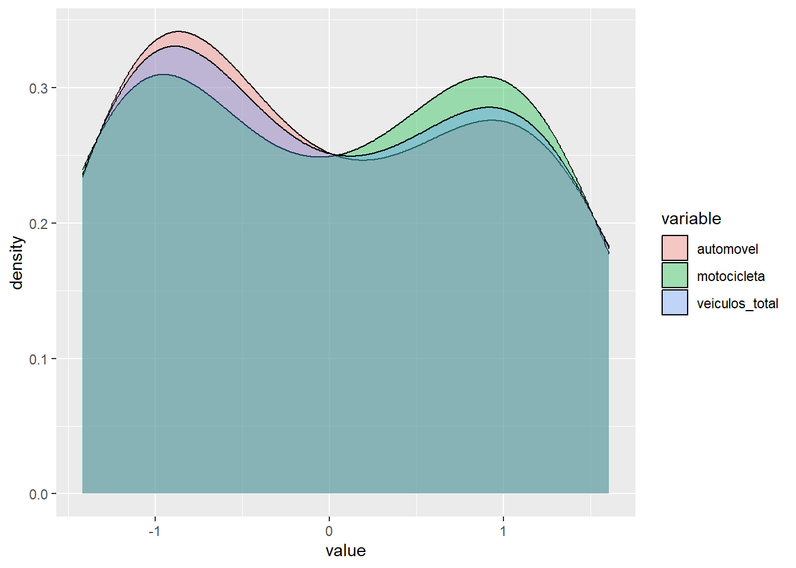
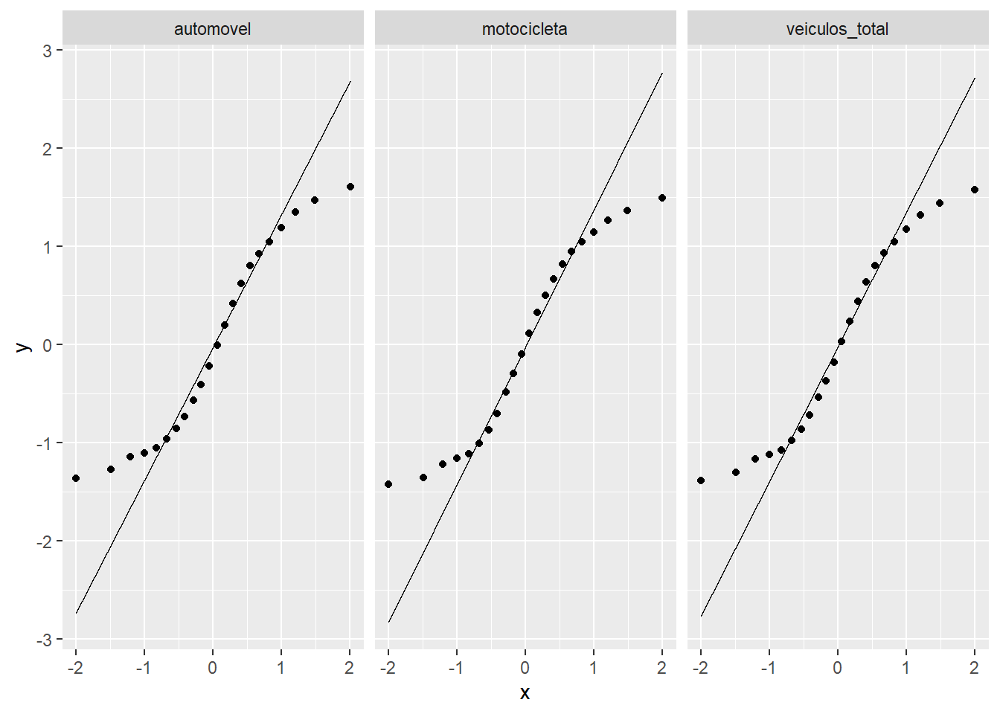

library(tidyverse)
library(ggplot2)
library(knitr)
library(obsplot)
library(ggcorrplot)
library(Hmisc)
library(reshape2)Análise Exploratória de Dados
Importando bibliotecas
Carregando dados
enderecos_data <- paste(
"data/",
list.files("data/"),
sep = ""
)
for (k in enderecos_data) {
load(k)
}Preparando labels para junção dos dataframes
frota_veiculos <- frota_veiculos |>
rename(
veiculos_total = total,
ano = anos
)
pib <- pib |>
rename(
pib = total
)Juntando os dataframes
df_list <- list(
frota_veiculos,
obitos_transito,
pib,
populacao,
sinistros_prf,
tabela_condutores
)
df_total <- df_list |>
reduce(full_join, by = "ano") |>
relocate(ano) |>
arrange(ano)Iniciando EDA
Séries temporais
- Veículos
veiculos_plot <- df_total |>
select(ano, automovel, motocicleta, veiculos_total) |>
pivot_longer(-1) |>
drop_na() |>
ggplot(aes(ano, value, color = name)) +
geom_point() +
geom_line() +
xlab("Anos") +
ylab("Quantidade") +
scale_y_continuous(limits = c(0,NA)) +
scale_x_continuous(breaks = seq(2000,2021,1)) +
theme(axis.text.x = element_text(angle = 90, vjust = 0.5, hjust=1))
veiculos_plot + scale_discrete_obs()
- Mortes no trânsito
mortes_plot <- ggplot(df_total, aes(x = ano, y = mortes)) +
geom_line() +
geom_point() +
expand_limits(y = 0) +
scale_discrete_obs() +
scale_y_continuous(limits = c(0,NA)) +
scale_x_continuous(breaks = seq(1995,2021,1)) +
theme(axis.text.x = element_text(angle = 90, vjust = 0.5, hjust=1))
mortes_plot
- Acidentes
prf_plot1 <- df_total |>
select(ano, qnt_acidentes_fatais, qnt_mortos, qnt_acidentes, qnt_feridos) |>
pivot_longer(-1) |>
drop_na() |>
ggplot(aes(x = ano, y = value, color = name)) +
geom_line() +
geom_point() +
scale_discrete_obs() +
scale_y_continuous(limits = c(0,NA)) +
scale_x_continuous(breaks = seq(2006,2021,1)) +
theme(axis.text.x = element_text(angle = 90, vjust = 0.5, hjust=1))
prf_plot2 <- df_total |>
select(ano, qnt_acidentes_fatais, qnt_mortos) |>
pivot_longer(-1) |>
drop_na() |>
ggplot(aes(x = ano, y = value, color = name)) +
geom_line() +
geom_point() +
scale_discrete_obs() +
scale_y_continuous(limits = c(0,NA)) +
scale_x_continuous(breaks = seq(2006,2021,1)) +
theme(axis.text.x = element_text(angle = 90, vjust = 0.5, hjust=1))
prf_plot1
prf_plot2
- PIB
pib_plot <- df_total |>
select(ano, pib) |>
drop_na() |>
ggplot(aes(x = ano, y = pib)) +
geom_line() +
geom_point() +
scale_y_continuous(limits = c(0,NA)) +
scale_x_continuous(breaks = seq(1999,2021,1)) +
theme(axis.text.x = element_text(angle = 90, vjust = 0.5, hjust=1))
pib_plot
- Condutores
condutores_plot <- df_total |>
select(ano, condutores) |>
drop_na() |>
ggplot(aes(ano, condutores)) +
geom_line() +
geom_point() +
scale_y_continuous(limits = c(0,NA)) +
scale_x_continuous(breaks = seq(1996,2021,1)) +
theme(axis.text.x = element_text(angle = 90, vjust = 0.5, hjust=1))
condutores_plot
Correlograma
cor_spearman <- df_total |>
drop_na() |>
cor(method = c("spearman"))
cor_pearson <- df_total |>
drop_na() |>
cor(method = c("pearson"))
cor_kendall <- df_total |>
drop_na() |>
cor(method = "kendall")- Visualização
ggcorrplot(cor_pearson, type = "lower",
lab = TRUE, hc.order = TRUE,
lab_size = 3)
ggcorrplot(cor_spearman, type = "lower",
lab = TRUE, hc.order = TRUE,
lab_size = 3)
ggcorrplot(cor_kendall, type = "lower",
lab = TRUE, hc.order = TRUE,
lab_size = 3)
Distribuição
- Veículos
df_total |>
select(automovel, motocicleta, veiculos_total) |>
melt() |>
ggplot(aes(x = value, fill = variable)) +
geom_density(alpha = 0.35)
df_total |>
select(automovel,motocicleta,veiculos_total) |>
melt() |>
ggplot(aes(x = variable, y = value)) +
geom_boxplot(aes(fill = variable))
df_total |>
select(automovel,motocicleta,veiculos_total) |>
melt() |>
ggplot(aes(x = value)) +
geom_histogram(bins = 15, color = "black", fill = "yellow") +
facet_wrap(vars(variable)) +
theme(axis.text.x = element_text(angle = 45, vjust = 1, hjust=1))
df_total |>
select(automovel, motocicleta, veiculos_total) |>
melt() |>
ggplot(aes(sample = value)) +
facet_wrap(vars(variable)) +
stat_qq() +
stat_qq_line()
df_standardized <- df_total |>
scale(center = TRUE, scale = TRUE) |>
as.tibble()
df_standardized |>
select(automovel, motocicleta, veiculos_total) |>
melt() |>
ggplot(aes(x = value, fill = variable)) +
geom_density(alpha = 0.35)
df_standardized |>
select(automovel,motocicleta,veiculos_total) |>
melt() |>
ggplot(aes(x = variable, y = value)) +
geom_boxplot(aes(fill = variable))
df_standardized |>
select(automovel,motocicleta,veiculos_total) |>
melt() |>
ggplot(aes(x = value)) +
geom_histogram(bins = 15, color = "black", fill = "yellow") +
facet_wrap(vars(variable)) +
theme(axis.text.x = element_text(angle = 45, vjust = 1, hjust=1))
df_standardized |>
select(automovel, motocicleta, veiculos_total) |>
melt() |>
ggplot(aes(sample = value)) +
facet_wrap(vars(variable)) +
stat_qq() +
stat_qq_line()
- Mortes
df_total |>
ggplot(aes(x = mortes)) +
geom_histogram(aes(y = ..density..), bins = 15, color = "blue", fill = "lightblue") +
geom_density(color = "red")
df_total |>
ggplot(aes(y = mortes)) +
geom_boxplot()
df_total |>
ggplot(aes(sample = mortes)) +
stat_qq() +
stat_qq_line()
- PIB
df_total |>
ggplot(aes(x = pib)) +
geom_histogram(aes(y = ..density..), bins = 15, color = "blue", fill = "lightblue") +
geom_density(color = "red")